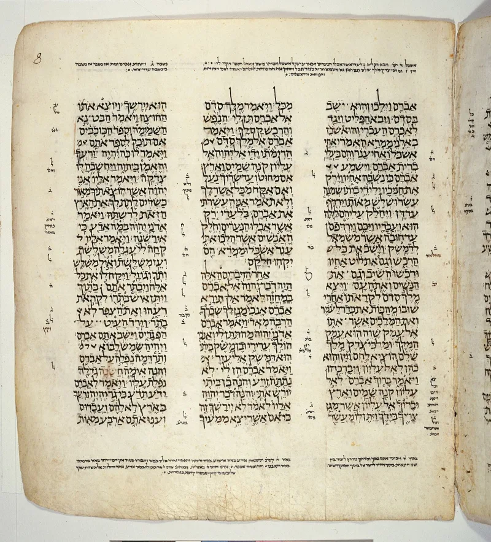
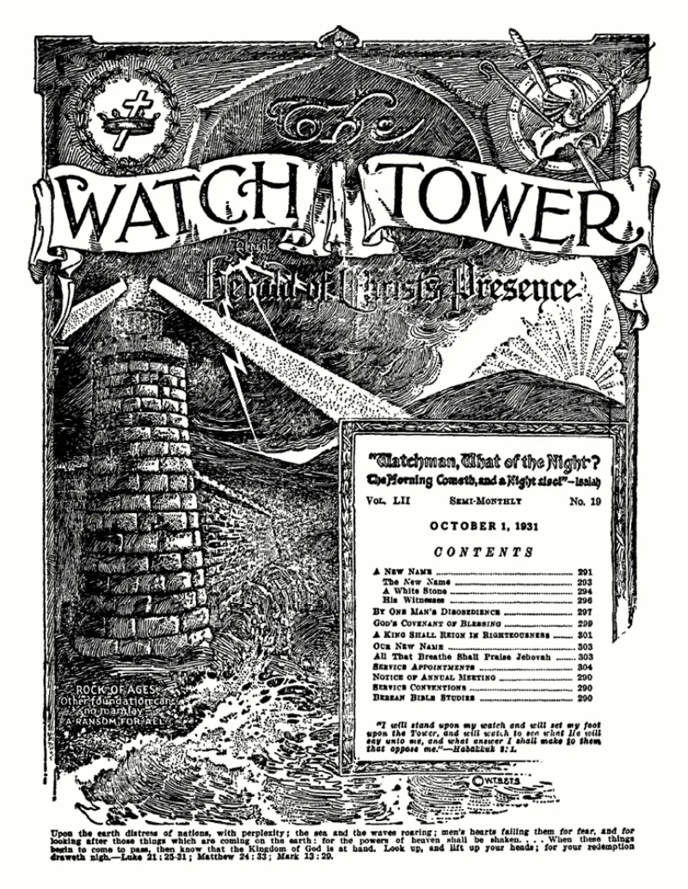

Fred Franz, under oath: 'I do not speak Hebrew'
UnrefutedNo good counter-argument has been published by the Watchtower.
Who translated it
The New World Bible Translation Committee has never been named by the Watchtower. Readers are asked to trust a Bible whose translators cannot be checked.
Every major Bible names its translators. The NIV, ESV, NASB and NRSV all publish their credentials.
What is known anyway
Raymond Franz sat on the Governing Body and later named them. In Crisis of Conscience he lists Nathan Knorr, Frederick Franz, George Gangas and Albert Schroeder.
Fred Franz did most of the work. He had two years of Greek at the University of Cincinnati, and taught himself Hebrew.
He held no degree in the biblical languages. No other member had known training in them.
The courtroom scene
In 1954 Fred Franz gave evidence under oath in the Walsh trial, in the Court of Session in Scotland. Asked about Hebrew, he answered "I do not speak Hebrew." Asked to put Genesis 2:4 into Hebrew, he said "No.
I wouldn't attempt to do that."
Their answer, at full strength
The committee asked to stay unnamed so the glory would go to God. A translation should be judged on its work, not on diplomas.
Jason BeDuhn ranked their Bible among the more accurate of nine he compared. And the court asked Franz to compose Hebrew, not to read it.
Many working Hebrew scholars would decline that on the stand. Franz had studied Greek formally and won a scholarship.
How strong is this argument?
Strong on the anonymity, weak on the courtroom line. Drop the Genesis 2:4 story.
Critics who lead with it get corrected. Proverbs 18:17 is the point: the first to plead his case seems right until another examines him.
What to say
"Who translated the Bible you handed me? I can look up every translator of mine."



How they answer this — at its strongest
They stayed unnamed so glory goes to God, and BeDuhn ranked their Bible highly.
The Watchtower says the committee asked to stay unnamed. The glory should go to God, and to the Bible's Author, rather than to men. It notes that translations are properly judged on their merits, not on their makers' diplomas.
On the merits, Jason BeDuhn ranked the NWT among the more accurate of nine English translations he compared. As for the Walsh trial, defenders point out what Franz was asked to do. He was asked to translate English into Hebrew. That is composition. Many working Hebrew scholars would decline that in a courtroom without preparation. It is not the same as reading Hebrew, which Franz demonstrably did for decades. He had studied Greek formally, won a scholarship, and read several languages.
The verdict
Strong on the secrecy, weak on the court scene. Drop the Genesis 2:4 line.
The core facts stand. An unnamed committee. Credentials nobody can check. And a chief translator with two years of college Greek and self-taught Hebrew. That man produced a Bible that overrules trained scholars at exactly the tender points. The account comes from a Governing Body insider. He was also Franz's nephew.
The steelman deserves respect on one detail. Critics often overstate the Genesis 2:4 court scene. Declining to compose Hebrew on the stand proves little. Sites that lead with it get fact-checked and look foolish.
So use the secrecy and the credentials on record. Skip the gotcha framing. Secrecy that blocks accountability is the issue Proverbs 18:17 names.
Sources
- Walsh Trial transcript (Internet Archive scan)
- CRI — Fred Franz Court Transcripts, November 24, 1954
- Bible Research (Michael Marlowe) — The New World Translation
- Raymond Franz, Crisis of Conscience (4th ed., full text)
- For An Answer — Franz, LaSor, and the NWT